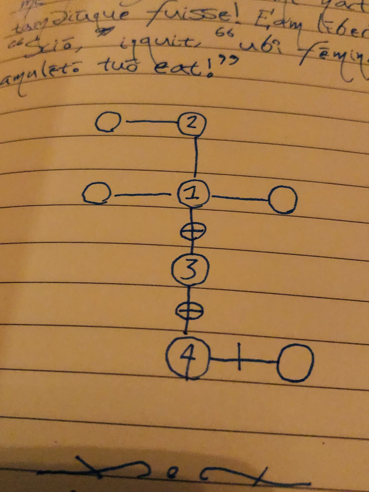

a game for getting stuff done and learning a foreign language
Written on
Like writing? Like learning foreign languages? Like role playing games? Here is a to-do list game I made up that has all three:
(a) Use your imagination to transform the task you need to do into a fantasy realm scenario. For example, "Gather ingredients to bake a cake" could become "Obtain reagents for a powerful strength spell." Write this sentence down in the target language (I tend to use Latin for mine). Now circle a word from the sentence that seems especially central to its meaning, for example the word "spell" (which could be translated as "incantāmentum" in Latin).
(b) The letters in the word determine certain features of your surroundings (the following identifications are based on letter frequencies in Latin; feel free to change them to suit your target language):
“a”: there is a door (or some open path) toward the east from your current position
“s”: door to the north
“t”: door to the west
“u”: door to the south
If any of these letters shows up more than once in the word, then the door is locked (or the pathway blocked). For example, using "incantāmentum" we find that there are doors to the east, west, and south; the doors to the west and the east are locked, but the south one is open. To go in a currently inaccessible direction, in this case to the west or east, you will need the word to have the letter...
“c”: there is a key somewhere near you (or some means of unblocking an inaccessible direction)

Each key can be used exactly once, after which it disappears!
(c) Okay, so now you have your word, and through it know some basic facts about your surroundings. It's time to do part of the real-world task (with whatever degree of chunkiness you deem appropriate). After this task is completed...
(e) ...you can choose to stay in your current area or not. Either way, move to the next part of your current task or the next task on your todo list, write another sentence for your story based on that item, and circle a new word.
If you chose to stay where you are, the letters of the word will have no effect on your surroundings, but if you chose to go through a door then the word’s letters will determine the basic characteristics of your new surroundings. You can use the word itself, however, to add to the story if you wish.
(f) As you progress, keep a little drawing showing where you’ve been as well as locked and unlocked paths, as shown below: You may need to revisit places to move your story forward!
And that's the basic system – happy adventuring :)
further suggestions - Use props and action figures to show what's happening in your surroundings. - As a simple battle system, when you encounter a monster you'll need to roll higher than some predetermined number to win, which depends on the strength of the foe you face; if you roll lower than that you suffer some penalty, e.g., being moved back several rooms. Potions, magical items, spells, and abilities modify the number you need to roll to win. - As you complete tasks, give yourself experience points that allow you to unlock new abilities when you reach a specified number of points. - If you have to solve some tough real world problem, translate it into solving an in-game riddle to open, e.g., a door or a teleportation portal, or to cast a complicated spell. - Give your realm a name and some lore to add depth. (For example, my realm is called the Imperium Arcānum, or the The Arcane Imperium.) - Create mini-quests within the main adventure.
This game definitely works best when you use your imagination both to play and to add variety to it; now that you have the basic idea, modify it in whatever ways that make it the most fun for you!
